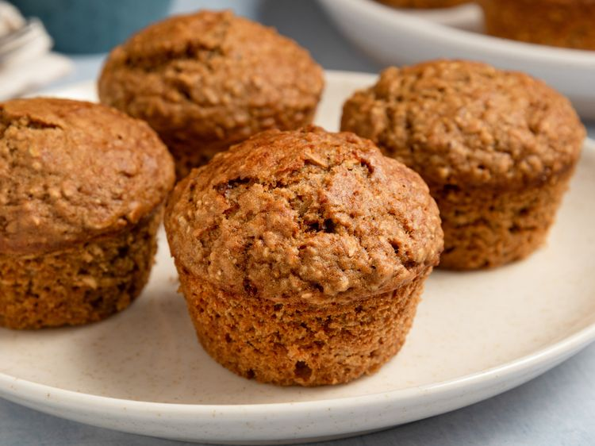

Oat Bran Muffins

These oat bran muffins are made with bran, not oatmeal. I have made these for about 5 years now and love them. They are great made with cinnamon or cranberry applesauce, as well as plain applesauce. My daughter loves them, and I hope you will enjoy them, too!
Ingredients
- 1 ½ cups oat bran
- 1 ½ cups all-purpose flour
- ½ cup dark brown sugar
- 2 teaspoons baking powder
- 2 teaspoons baking soda
- ½ teaspoon salt
- 1 cup chilled applesauce
- 2 large eggs
- ¼ cup vegetable oil
Directions
- Preheat the oven to 400 degrees F
- Blend together oat bran, flour, brown sugar, baking powder, baking soda, and salt in a large bowl. Add chilled applesauce, eggs, and oil; mix until well blended. Spoon batter into the prepared muffin cups. Let stand for 10 minutes.
- Bake in the preheated oven until golden brown and a toothpick inserted into the center of muffins comes out clean, about 15 minutes.
Home